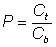

Enzyme Technology
Aqueous biphasic systems
The 'incompatibility' of certain polymers in aqueous solution was
first noted by Beijerinck in 1896. In this case two phases were formed when agar
was mixed with soluble starch or gelatine. Since then, many two phase aqueous
systems have been found; the most thoroughly investigated being the aqueous
dextran-polyethylene glycol system (e.g., 10% polyethylene glycol 4000/2% dextran
T500), where dextran forms the more hydrophilic, denser, lower phase and
polyethylene glycol the more hydrophobic, less dense, upper phase. Aqueous three
phase systems are also known.
Phases form when limiting concentrations of the
polymers are exceeded. Both phases contain mainly water and are enriched in one
of the polymers. The limiting concentrations depend on the type and molecular
weight of the polymers and on the pH, ionic strength and temperature of the
solution. Some polymers form the upper hydrophobic phase in the presence of
fairly concentrated solutions of phosphates or sulphates (e.g., 10% polyethylene
glycol 4000/12.5% potassium phosphate buffer). A drawback to the useful dextran/polyethylene
glycol system is the high cost of the purified dextran used. This has been
alleviated by the use of crude unfractionated dextran preparations, much cheaper
hydroxypropyl starch derivatives and salt-containing biphasic systems.
Aqueous
biphasic systems are of considerable value to biotechnology. They provide the
opportunity for the rapid separation of biological materials with little
probability of denaturation. The interfacial tension between the phases is very
low (i.e., about 400-fold less than that between water and an immiscible organic
solvent), allowing small droplet size, large interfacial areas, efficient mixing
under very gentle stirring and rapid partition. The polymers have a stabilising
influence on most proteins. A great variety of separations have been achieved,
by far the most important being the separation of enzymes from broken crude cell
material. Separation may be achieved in a few minutes, minimising the harmful
action of endogenous proteases. The systems have also been used successfully for
the separation of different types of cell membranes and organelles, the
purification of enzymes and for extractive bioconversions (see Chapter
7).
Continuous liquid two-phase separation is easier than continuous solid/liquid
separation using equipment familiar from immiscible solvent systems, for example
disc-stack centrifuges and counter-current separators. Such systems are readily
amenable to scale-up and may be employed in continuous enzyme extraction
processes involving some recycling of the phases.
Cells, cell debris proteins and
other material distribute themselves between the two phases in a manner
described by the partition coefficient (P) defined as:

(2.4)
where Ct
and Cb represent the concentrations in the top and bottom phases
respectively. The yield and efficiency of the separation is determined by the
relative amounts of material in the two phases and therefore depends on the
volume ratio (Vt/Vb). The partition coefficient is
exponentially related to the surface area (and hence molecular weight) and
surface charge of the particles in addition to the difference in the electrical
potential and hydrophobicity of the phases. It is not generally very sensitive
to temperature changes. This means that proteins and larger particles are
normally partitioned into one phase whereas smaller molecules are distributed
more evenly between phases. A partition coefficient of greater than 3 is
required if usable yields are to be achieved by a single extraction process.
Typical partition coefficients for proteins are 0.01-100 whereas the partition
coefficients for cells and cell debris are effectively zero.
The influence of pH
and salts on protein partition is complex, particularly when phosphate buffers
are present. A given protein distributes differently between the phases at
different pH's and ionic strength but the presence of phosphate ions affect the
partition coefficient in an anomalous fashion because these ions distribute
themselves unequally resulting in electrostatic potential (and pH) differences.
This means that systems may be 'tuned' to enrich an enzyme in one phase, ideally
the upper phase with cell debris and unwanted enzymes in the lower phase.
An
enzyme may be extracted from the upper (polyethylene glycol) phase by the
addition of salts or further polymer, generating a new biphasic system. This
stage may be used to further purify the enzyme. A powerful modification of this
technique is to combine phase partitioning and affinity partitioning. Affinity
ligands (e.g., triazine dyes) may be coupled to either polymer in an aqueous
biphasic system and thus greatly increase the specificity of the
extraction.
Home
| Back | More
on aqueous biphasic systems | Next
This page was established in 2004 and last updated by Martin
Chaplin
on
25 May, 2020
|